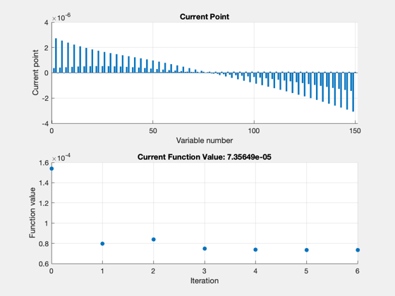
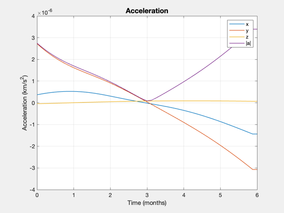
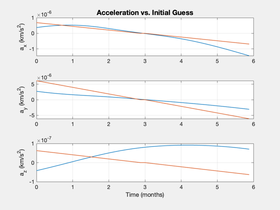
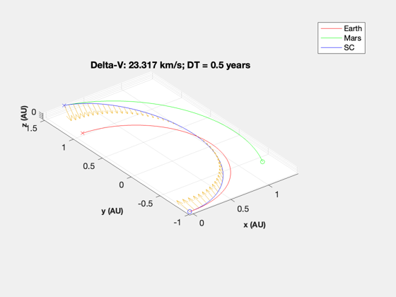
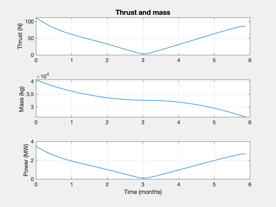

Optimal 3D transfer to Mars, continuous thrust
Optimize a transfer to Mars for continuous thrust, minimizing the total acceleration. This is a fixed end point optimization, run it with different durations and start dates to see how the delta-V required will vary. This routine uses JPL ephemerides for both the Earth and Mars. The optimization function requires fmincon in the Optimization toolbox.
This demo uses a longer duration resulting in a power level that might be appropriate for for a solar powered electric propulsion mission.
See also: Date2JD, TrajectoryBetweenTwoPlanets, SpacecraftFromAccel
Contents
%-------------------------------------------------------------------------- % Copyright (c) 2023 Princeton Satellite Systems, Inc. % All rights reserved. % Since version 2023.1 %--------------------------------------------------------------------------
Compute the optimal trajectory
Launch date
jD0 = Date2JD([2022 6 19 0 0 0]); % Planet IDs planet1 = 3; planet2 = 4; % long, low-thrust transfer years = 0.5; nPts = 50; s = TrajectoryBetweenTwoPlanets( jD0, planet1, planet2, years, nPts );
First-order Norm of
Iter F-count f(x) Feasibility optimality step
0 301 1.538129e-04 1.021e+08 1.842e-05
1 602 7.979193e-05 1.399e+07 4.701e+03 1.390e-05
2 903 8.401357e-05 1.016e+05 4.684e+03 3.822e-06
3 1205 7.488607e-05 3.256e+03 3.943e+03 3.079e-06
4 1507 7.359173e-05 1.313e+03 1.585e+02 8.471e-07
5 1808 7.356509e-05 6.971e+02 2.196e-01 2.167e-08
6 2109 7.356494e-05 3.866e+00 4.722e-02 2.326e-10
Optimization stopped because the relative changes in all elements of x are
less than options.StepTolerance = 1.000000e-10, and the relative maximum constraint
violation, 3.785413e-08, is less than options.ConstraintTolerance = 1.000000e-06.
Nonoptimal solution, flag: 2
iterations: 6
funcCount: 2109
constrviolation: 3.8663
stepsize: 2.3264e-10
algorithm: 'interior-point'
firstorderopt: 0.04722
cgiterations: 0
message: 'Local minimum possible. Constraints satisfied.↵↵fmincon stopped because the size of the current step is less than↵the value of the step size tolerance and constraints are ↵satisfied to within the value of the constraint tolerance.↵↵<stopping criteria details>↵↵Optimization stopped because the relative changes in all elements of x are↵less than options.StepTolerance = 1.000000e-10, and the relative maximum constraint↵violation, 3.785413e-08, is less than options.ConstraintTolerance = 1.000000e-06.'
bestfeasible: []
Final Equality Constraints (km, km/s)
-1.2349
3.8663
-2.6399
-1.2964e-06
1.8375e-07
-2.6912e-07
    Size the spacecraft
This will compute the power required to move the requested payload given the acceleration profile returned from the optimization. Not all combinations of parameters will converge.
sC = SpacecraftFromAccel; sC.uE = 50; % exhaust velocity, km/s sC.sigma = 300; % specific power, W/kg sC.fS = 0.08; % fuel structural fraction sC.eff = 0.8; % efficiency to jet thrust power sC.mP = 10000; % payload mass, kg SpacecraftFromAccel(sC,s); %-------------------------------------- % $Id: 30d1493b07037c92cc854882ff0fa7611e8be1b1 $
Total mission DV: 23.2 km/s Max thrust power: 3.496 MW Total mass: 40712.9 kg Payload mass: 10000 kg Engine mass: 11654 kg Fuel mass: 15121 kg Structural mass: 1210 kg Payload Fraction: 0.245622